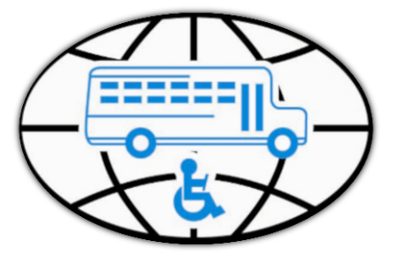
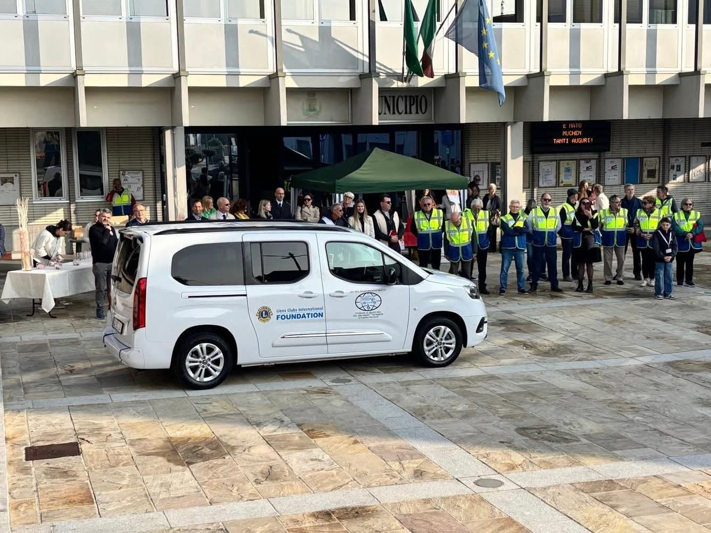
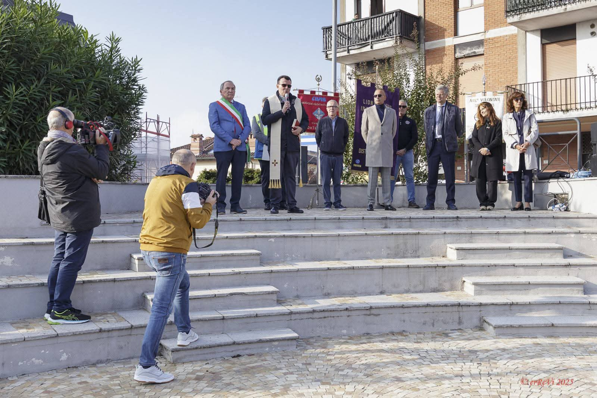
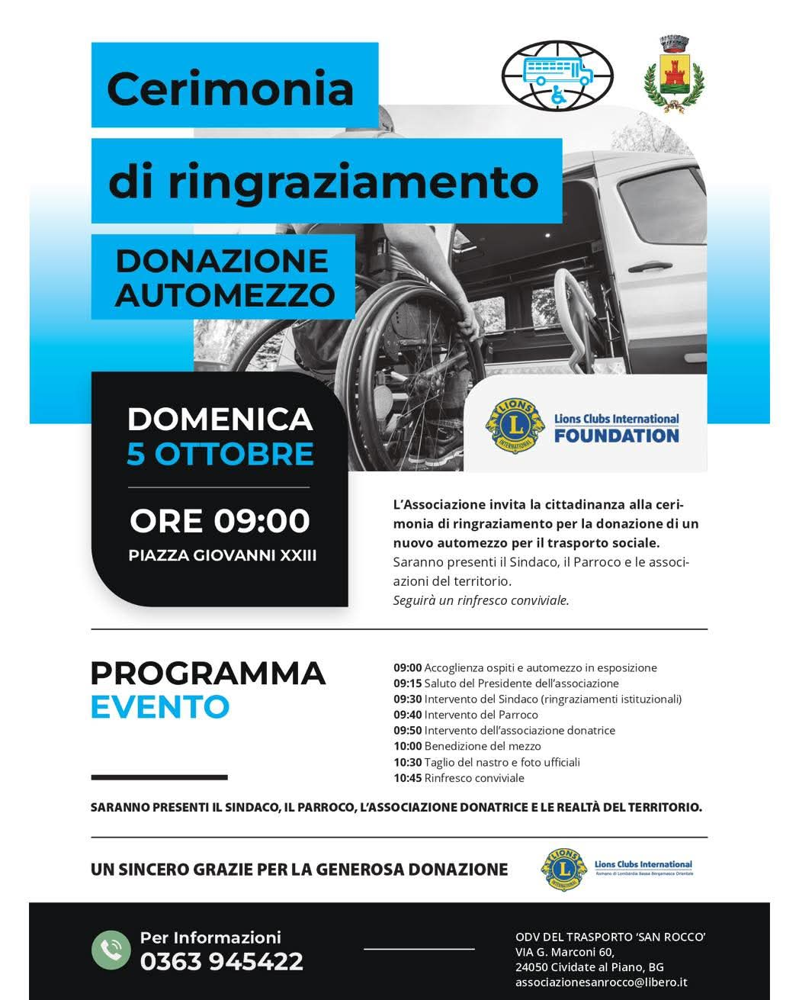
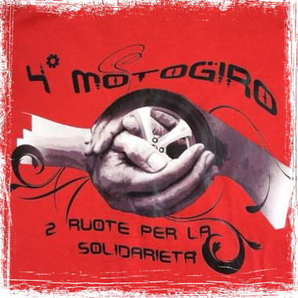
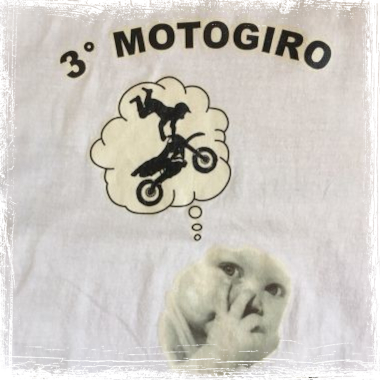
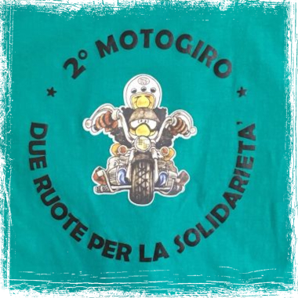
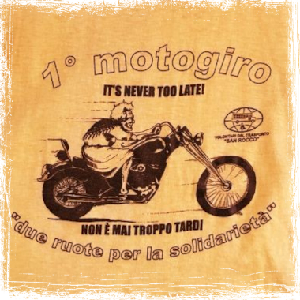
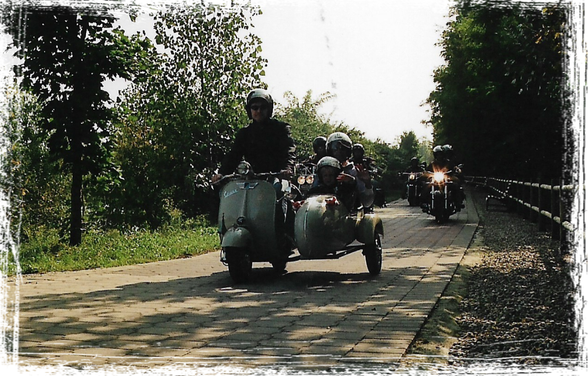

Evento: Da comnunicare
Quando: Da comunicare
Dove: Cividade al Piano
Da comunicare

Evento: Cerimonia di ringraziamento
Quando: 5 Ottobre 2025 alle ore 09:00
Dove: Piazza Giovanni XXIII (Cividade al Piano)
L'Associzione invita la cittadinanza alla cerimonia di
ringraziamento per la donazione di un nuovo automezzo per il
trasporto sociale.
Saranno presenti il Sidanco, il Parroco e le associazioni del
territorio.
Seguirà un rinfresco conviviale.



Evento: Quarto Motogiro
Quando: 11 Settembre 2011
Dove: Cividade al Piano
"Due Ruote per la Solidarietà" quarta edizione. Partenza dei Motociclisti dal Centro Sportivo di Cividate al Piano alla volta dei seguenti Comuni: Cividate al Piano, Calcio, Romano di Lombardia, Bariano, Morengo, Cologno, Ghisalba e Martinengo. Rientro al Centro Sportivo di Cividate al Piano per festa e abbondante pranzo.

Evento: Terzo Motogiro
Quando: 29 Settembre 2009
Dove: Cividade al Piano
"Due Ruote per la Solidarietà" terza edizione. Partenza dei Motociclisti dal Centro Sportivo di Cividate al Piano alla volta dei seguenti Comuni: Cividate al Piano, Calcio, Romano di Lombardia, Bariano, Morengo, Cologno, Ghisalba e Martinengo. Rientro al Centro Sportivo di Cividate al Piano per festa e abbondante pranzo.

Evento: Secondo Motogiro
Quando: 07 Settembre 2008
Dove: Cividade al Piano
"Due Ruote per la Solidarietà" seconda edizione. Partenza dei Motociclisti dal Centro Sportivo di Cividate al Piano alla volta dei seguenti Comuni: Cividate al Piano, Calcio, Romano di Lombardia, Bariano, Morengo, Cologno, Ghisalba e Martinengo. Rientro al Centro Sportivo di Cividate al Piano per festa e abbondante pranzo.

Evento: Primo Motogiro
Quando: 23 Settembre 2007
Dove: Cividade al Piano
"Due Ruote per la Solidarietà" seconda edizione. Partenza dei Motociclisti dal Centro Sportivo di Cividate al Piano alla volta dei seguenti Comuni: Cividate al Piano, Calcio, Romano di Lombardia, Bariano, Morengo, Cologno, Ghisalba e Martinengo. Rientro al Centro Sportivo di Cividate al Piano per festa e abbondante pranzo.

